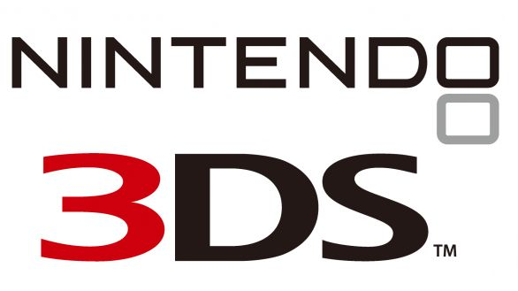
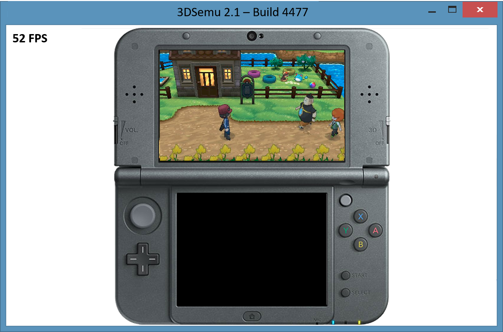

3DSemu Official Website

3DSemu is one of the first Nintendo 3DS emulators to be created. It can run commercial
and homebrew game at 60 FPS on a standard computer. 3DSemu is totally safe to download, so
you can go ahead and download the emulator right now!